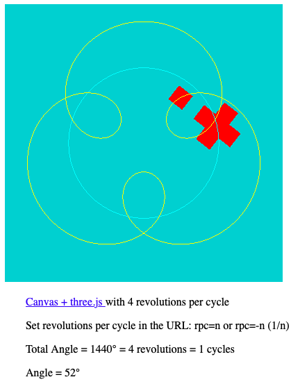

Sample solution for homework 3, problem 3, done in Three.js
Here we are setting the objects' scale, rotation, and position properties, with matrixAutoUpdate set to true (default).
Internally, Three.js uses these values to set the object's model matrix to Translate * Rotate * Scale based on these properties.- Since:
- 10/11/2014
- Source:
- See:
-
- https://threejs.org/docs/?q=scene#manual/en/introduction/Creating-a-scene
- https://threejs.org/docs/#api/en/geometries/PlaneGeometry
- https://threejs.org/docs/#api/en/materials/MeshBasicMaterial
- https://threejs.org/docs/?q=mesh#api/en/objects/Mesh
- https://threejs.org/docs/#api/en/core/BufferGeometry
- https://threejs.org/docs/#api/en/core/Object3D
- https://threejs.org/docs/#api/en/math/MathUtils.degToRad
- link
- source
- 